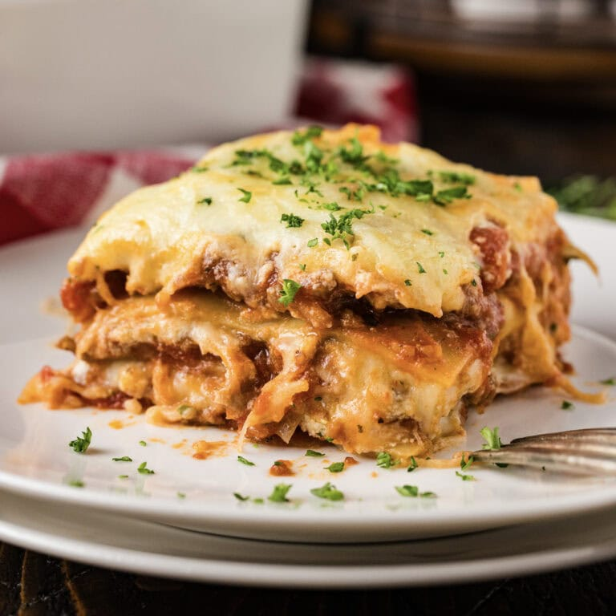

Lasagna Recipe

Lasagna is a type of pasta made in wide, flat sheets, traditionally used to create a layered dish. The dish consists of alternating layers of pasta, ragù (a meat-based sauce), béchamel sauce, and various cheeses, such as mozzarella and Parmesan. It is typically baked in the oven until bubbly and golden.
Ingredients:
- 12 lasagna noodles
- 1 pound ground beef
- 1 onion, chopped
- 2 cloves garlic, minced
- 1 (28-ounce) can crushed tomatoes
- 2 tablespoons tomato paste
- 1 teaspoon dried basil
- 1 teaspoon dried oregano
- Salt and pepper to taste
- 2 cups ricotta cheese
- 2 cups shredded mozzarella cheese
- 1/2 cup grated Parmesan cheese
Steps:
- Cook lasagna noodles according to package instructions.
- In a large skillet, brown the ground beef and drain excess fat.
- Add the onion and garlic, and cook until the onion is translucent.
- Stir in the crushed tomatoes, tomato paste, basil, oregano, salt, and pepper.
- Simmer the sauce for 15 minutes.
- In a mixing bowl, combine the ricotta cheese with half of the mozzarella cheese and half of the Parmesan cheese.
- Preheat the oven to 375°F (190°C).
- Spread a thin layer of sauce in the bottom of a 9x13 inch baking dish.
- Layer half of the noodles over the sauce.
- Spread half of the cheese mixture over the noodles.
- Pour half of the sauce over the cheese mixture.
- Repeat the layers once more.
- Top with the remaining mozzarella and Parmesan cheeses.
- Bake for 30 minutes or until bubbly and golden.
Back to Home